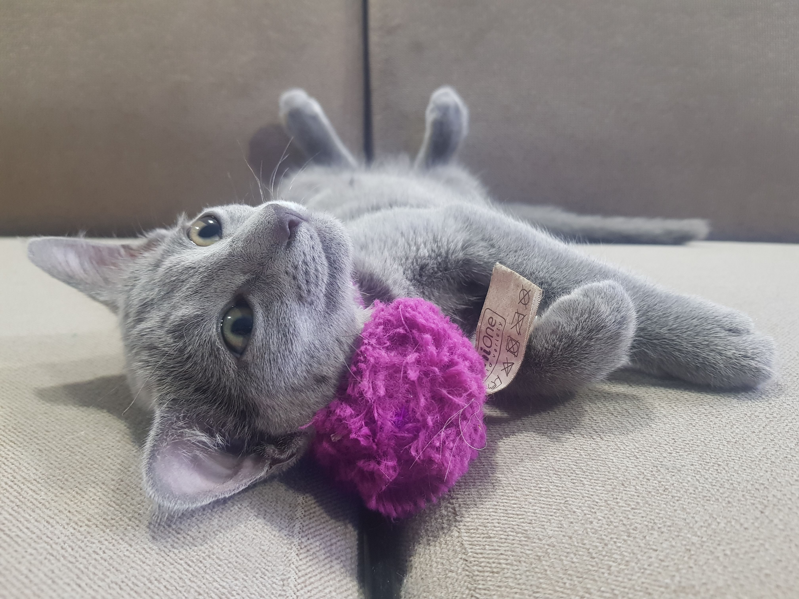
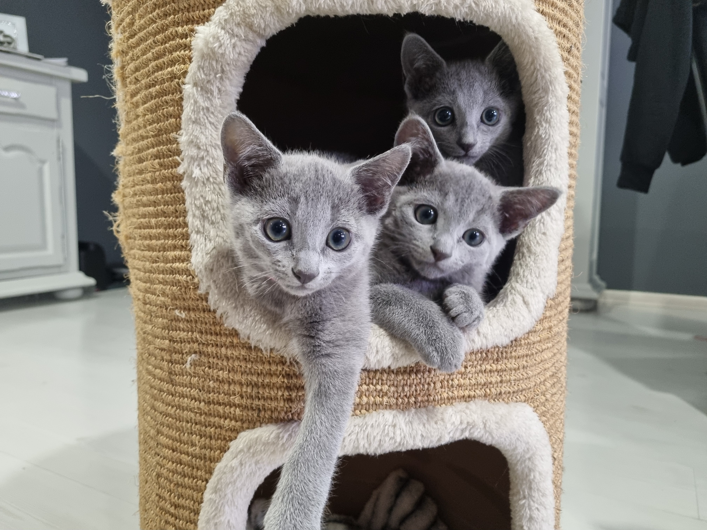

Charakter, temperament oraz usposobienie
Jakie są koty rosyjskie? Charakter tych zwierząt sprawia, że to doskonałe zwierzęta domowe. Cenią sobie spokój, a przy tym bardzo mocno przywiązuje się do rodziny. Jest energiczny i pełen chęci do zabawy, a swój czas chętnie będzie spędzał z rodziną – z tego powodu nada się też jako towarzysz starszego dziecka. Bardzo mocno przywiązuje się do całej rodziny, ale to jednego jej członka wybierze na swojego ukochanego człowieka i będzie bardzo cierpiał bez jego towarzystwa.
Koty te na ogół nie lubią samotności – wolą spędzać czas ze swoją rodziną. Obcych traktują z ostrożną rezerwą, ale mogą się do nich przekonać i zaprzyjaźnić z nimi. Nie są to koty agresywne ani konfliktowe. Te koty bardzo niechętnie wychodzą na zewnątrz, nawet jeśli dasz im taką bezpieczną możliwość. Nie lubią też podróży i zmiany otoczenia.
Jest zwierzęciem o budowie niezwykle harmonijnej, proporcjonalnej. To chodząca elegancja. Jest to kot średniej wielkości, ważący zwykle od 2,5 do 4,5 kg. Smukły, lecz dobrze umięśniony, o wydłużonej sylwetce, długiej i prostej szyi, kot rosyjski jest pełen gracji. Jego głowa jest nieduża, w kształcie krótkiego klina, proporcjonalna do reszty ciała. Czoło powinno być płaskie, nos prosty, broda mocna, a poduszki z wibrysami mocno zaznaczone.
